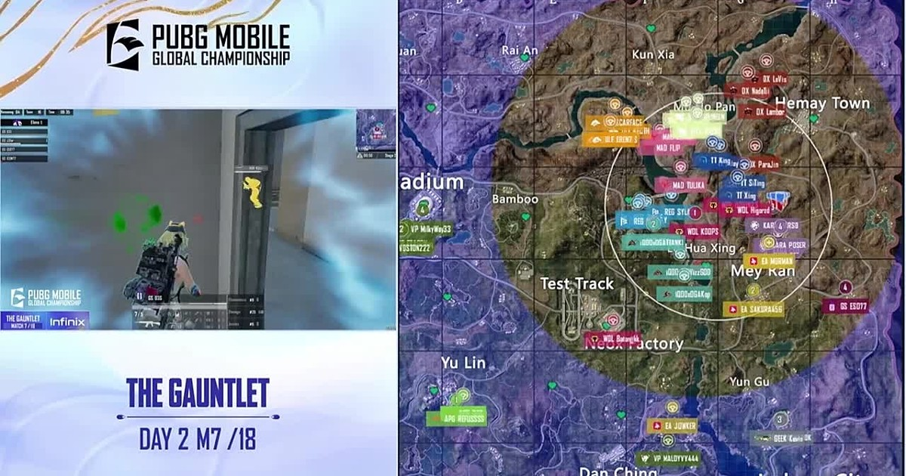

AK Gold win the PMGC 2026 Gauntlet — six teams are straight into the Grand Finals
The opening stage of the PUBG Mobile Global Championship 2026 is done in Istanbul. AK Gold Esports topped The Gauntlet, and six teams have skipped the rest of the road — they are already in December's Grand Finals, while the other ten drop into the Group Stage with their tournament still alive.

Disclosure: this post contains affiliate links. I earn a commission on qualifying purchases.
The first stage of the PUBG Mobile Global Championship 2026 closed on Friday in Istanbul, and the fast lane to the world title is now full. Sixteen teams played twelve matches across November 26 and 27 in The Gauntlet, the opening stage of a 39-team championship. The top six are done qualifying — they go straight to the Grand Finals. Everyone else drops into the Group Stage, where the longer road begins.
Indonesia's AK Gold Esports finished on top with 108 points. They did it the steady way: a lobby-best 45 placement points, paired with 63 finishes and a single Chicken Dinner. Consistency across twelve matches beat every hotter, streakier run in the field.
The six who are already in
China's All Gamers took second on 105 points, powered by the most finishes of any team in the stage, with 73. Pakistan's 4Thrives Esports were third on 102, and Türkiye's S2G Esports — the home crowd's team, and the reigning PUBG Mobile World Cup champions — held fourth on 94 after leading the stage at the end of Day 1.
Thailand's Sharper Esports claimed fifth on 93, winning three Chicken Dinners along the way, more than any other team in The Gauntlet. The last direct seat went to India's Team SouL on 91 points — and theirs was the run of the stage.
Team SouL's climb
SouL ended Day 1 in eleventh place, well outside the cut. Day 2 changed everything. Their turning point was Match 11 on Miramar, a 24-point Chicken Dinner that dragged them into the top six, and they closed the stage with 71 finishes — the second-highest total in the lobby. A team that looked headed for the Group Stage gauntlet of its own instead booked the direct flight to the finals.
The rest of Day 2 underlined how tight the lobby was: 4Thrives won Match 9 on Erangel, and Hustler Crew took the twelfth and final match — a win that still left them outside the six, in the Group Stage half of the draw.
What the cut was worth
The Gauntlet carried its own prize pool of $429,000, and the drop after sixth place was steep. AK Gold's first place paid $65,000. Sixth place paid $56,000; seventh place, where South Korea's Nongshim RedForce landed, paid $11,000. Nobody went home — all ten teams below the line move on — but the six above it took most of the money and two full weeks of rest.
The road from here
The Group Stage runs November 29 to December 3: the ten Gauntlet teams join 22 invited sides, and the top three in each group advance. The Last Chance stage follows on December 5 and 6 for three more seats.
The Grand Finals run December 11 to 13 at Istanbul's Turkcell Basketbol Gelişim Merkezi. Sixteen teams will play for the world title: the six Gauntlet qualifiers, six from the Group Stage, three from Last Chance, and host-country invitee ULF Esports — with the finals stage carrying the biggest share of the championship's $3,000,000 prize pool.
Sources: PMGC 2026 Gauntlet Stage: Overall standings, qualified teams for Grand Finals, and summary (Sportskeeda) · PMGC 2026 Gauntlet Results: Standings, Prize Pool, Team SouL (The Gaming Diary) · PMGC 2026: Teams, Schedule, Format and Prize Pool (TalkEsport)
Watch
Source: PUBG Mobile Esports — the official broadcast of The Gauntlet at PMGC 2026 in Istanbul.
Gear up: Razer — mice, keyboards, headsets and laptops.